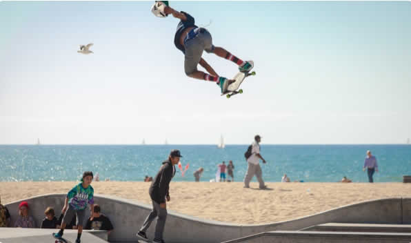

Sobre mí
Estudiante de Segundo Medio apasionado por la administración de sistemas críticos y la soberanía tecnológica. Mi enfoque principal es el despliegue de infraestructura robusta y eficiente en entornos GNU/Linux.
Actualmente desarrollo HandDesk Linux, una distribución basada en Debian optimizada para hardware de bajos recursos. Tengo experiencia técnica en la gestión de servidores RHEL 9 (LVM, seguridad de red) y mantenimiento de hardware. Mi meta es certificarme como RHCSA/RHCE y liderar proyectos de ingeniería de sistemas a nivel internacional.
Proyectos Destacados
HandDesk Linux
OS Debian-based optimizado para equipos antiguos.
Bare Metal RHEL 9.7
Configuración de servidor profesional con LVM y seguridad avanzada.

Android Debloating
Optimización de dispositivos móviles mediante ADB y Shizuku.
Experiencia Técnica
Lead Developer - HandDesk Project
Arquitectura de sistema, gestión de repositorios y personalización del entorno de escritorio para maximizar el rendimiento en hardware legacy.
Junior SysAdmin - Home Lab RHEL/Debian
Administración de servidores locales, despliegue de servicios y gestión de almacenamiento lógico (LVM) en entornos de producción controlada.
Formación
Enseñanza Media
Chicureo, Chile
Red Hat Training
Preparación para certificaciones RH199 y RH200.
Hardware Specialist
Reparación y mantenimiento de sistemas computacionales.